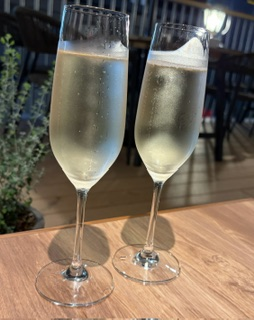
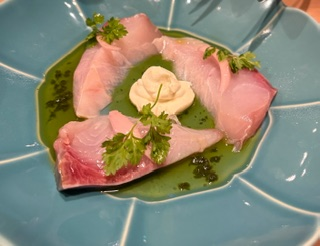
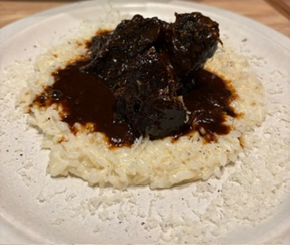

6月15日にオープンしたお店です。前のお店の時に行ったことがあるので内装的には似た雰囲気！？テラス席もあり、この時期はまだ快適です。
迷わずブリュット注文。大丈夫でした。最近気の抜けたのが出てくる確率が高すぎてちょっと恐怖でしたが美味しくて一気飲みしそうでした笑
先に出てきたのが、大沼牛のローストビーフで、野菜が下に埋もれていました。一人だと多すぎかも。
魚のカルパッチョは想像と違って大きな切り身で3切れ。2人なので適当に切り分けて等分しました。喧嘩しないように笑
キャンティを追加。
パスタもメインなので、美桜鶏とナッツの白いミートソースでオーダー。卵黄を割って混ぜてくださいと言われ、、卵黄なんですけど白いんです。
何を食べさせたらこの色に？と思いつつ、辛味もきいていてワインがすすみます。
チーズリゾットもいただきました。これ、リゾットといいつつ米は少しでメインは牛肉です。3800円で食べ応え十分です。
デザートにティラミスをオーダー。2つ頼んだら、かなり大きめとのことで1つに変更。たしかに、1人では無理でしょうって量です。1人だとどうするんでしょうという謎が・・・
料理が出てくるタイミングも良く、開店早々とは思えない落ち着き具合でした。また行きたいお店です。